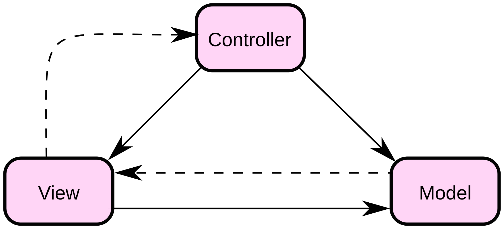

Was beim letzten mal geschah
- Multi Page Application
- JSF
- Wiederholung MVC
Rich Client: Client Anwendung
In dieser Vorlesung
- Single Page Applications
- Was ist eine SPA?
- Was sind Vorteile?
- Was sind Nachteile?
- Frontend Architekturen: Wie baue ich eine SPA?
- Component Architektur
- Micro Frontends
- Frontend Architektur in Angular
- Vergleich zu anderen Frameworks (React, Vue, Flutter)
- Praxis: Bau unserer Todo Anwendung in Angular
Wiederholung
Wie funktioniert die Navigation bei Multi Page Anwendungen?
@startuml
activate Client
Client -> Server: Request (GET)
deactivate Client
activate Server
Server -> Client: Response (HTML Page)
deactivate Server
activate Client
Client -> Server: Request (Post)
deactivate Client
activate Server
Server -> Client: Response (HTML Page)
deactivate Server
activate Client
@enduml
Motivation
Daten vom Backend
<html>
<head>
<link rel="stylesheet" href="style.css">
<script>{javascript}</script>
</head>
<body>
<div>
// some data
</div>
</body>
</html>
Stylesheets
<html>
<head>
<link rel="stylesheet" href="style.css">
<script>{javascript}</script>
</head>
<body>
<div>
// some data
</div>
</body>
</html>
Stylesheets
- enthalten häufig ähnliche Informationen
- könnten einmalig ausgeliefert werden
<style>
label {
font-size: 12pt;
color: blue;
}
input {
font-size: 10pt;
color: green;
height: 10px;
width: 20px;
}
</style>
JavaScript
<html>
<head>
<link rel="stylesheet" href="style.css">
<script>{javascript}</script>
</head>
<body>
<div>
// some data
</div>
</body>
</html>
JavaScript
- ebenfalls repetitiv
- auf mehreren HTML Seiten braucht es gleiche Funktionalität
<script>
function openDropdown() {
// do it
}
function doSomeFancyAnimation() {
// do it
}
</script>
HTML Struktur
<html>
// head
<body>
<header></header>
<nav></nav>
<div>
// some data
</div>
<footer></footer>
</body>
</html>
HTML Struktur
- dynamischer Anteil der Seite beschränkt sich auf Informationen
<html>
// head
<body>
<header></header>
<nav></nav>
<div>
// some data
</div>
<footer></footer>
</body>
</html>
Wartezeiten nach den Requests
@startuml
activate Client
Client -> Server: Request (GET)
deactivate Client
activate Server
Server -> Server: führt Geschäftslogik aus
Server -> Client: Response (HTML Page)
deactivate Server
activate Client
Client -> Server: Request (Post)
deactivate Client
activate Server
Server -> Server: führt Geschäftslogik aus
Server -> Client: Response (HTML Page)
deactivate Server
activate Client
@enduml
Single Page Application
“A single-page application is exactly what its name implies: a JavaScript-driven web application that requires only a single page load.”
JavaScript - The Definitive Guide
5th ed., O'Reilly, Sebastopol, CA, 2006
Single Page Application Konzept
@startuml
participant "Client" as client
participant "Web Server" as webServer
participant "Web Service" as webService
group Initializing
activate client
client -> webServer: GET /index.html
activate webServer
webServer -> client: index.html
webServer -> client: styles.css
webServer -> client: script.js
deactivate webServer
client -> client: start application
end
group Runtime
client -> webService: GET /some-id
deactivate client
activate webService
webService -> client: some-data
deactivate webService
activate client
client -> client: rerender
end
@enduml
Vorteile einer SPA
- reduktion der übertragenen Daten
- bessere User Experience
- weniger Serverressourcen
- Session Clientseitig (Server ist Stateless)
- Hybride Anwendung auch mobile einsetzbar
Reduktion der übertragenen Daten
hier reden wir von Daten zur "Runtime"
<html>
// head
<body>
<header></header>
<nav></nav>
<div>
// some data
</div>
<footer></footer>
</body>
</html>
Bessere User Experience
- kürzere Response Time
- weniger BE Request notwendig
- Seite ist während eines BE Requests benutzbar
- asynchrones Nachladen der Daten
Weniger Serverressourcen
- Rendering läuft auf dem Client
- Geschäftslogik kann auf dem Client laufen
- weniger BE Requests notwendig
- Server kümmert sich nur um die Daten
Nachteile einer SPA
- initiale Response ist groß
- Client ist nicht Vertrauenswürdig
- duplizierter Code
- höherer Entwicklungsaufwand
Initiale Response ist groß
@startuml
participant "Client" as client
participant "Web Server" as webServer
group Initializing
activate client
client -> webServer: GET /index.html
activate webServer
webServer -> client: index.html
webServer -> client: styles.css
webServer -> client: script.js
deactivate webServer
client -> client: start application
end
@enduml
Client ist nicht Vertrauenswürdig
- JavaScript Code auf dem Client kann manipuliert werden
- erneute Validierung im BE notwendig
- Validierungen sind meist duplizierter Code
- hierfür gibt es Abhilfe:
- Multiplattform Libraries
Single Page Applications
- Wir haben besprochen:
- Was ist eine SPA?
- Was sind ihre Vorteile?
- Was sind ihre Nachteile?
- Was uns fehlt:
- Wie baut man eine SPA?
- Welche Architekturen gibt es?
Wie baut man eine SPA?
Einfach mal loslegen?
Einfach mal loslegen?
- Erster Gedanke: Einfach mal loslegen.
- Wie soll die UI aussehen?
- Welche HTML Elemente brauche ich?
- Was brauche ich fürs Styling?
- Welche Logik soll das Frontend unterstützen?
Monolith

Monolith
- Monolithen sind typischerweise:
- schwer wiederverwendbar
- schwer erweiterbar
- Monolithen haben in sich meist:
- keine klaren Schnittstellen
- viele Abhängigkeiten
Monolith
- grundlegend sind Monolithen nicht schlecht um erstmal loszulegen
- ein Monolith kann durchaus seine Berechtigung haben
- wenn die Codebasis wächst werden diese leider sehr unübersichtlich
- mit mehreren Teams an einem Monolith zu arbeiten sorgt häufig für Konflikte
Component Architecture

Component Architecture
- divide et impera
- teilen der Webseite in einzelnen Components
- Verteilung und Strukturierung der Komplexität
- Components
- enthalten zusammengehörige Funktionalität
- quasi wie Klassen in OOP
- haben feste Schnittstellen
- möglichst lose Kopplung und hohe Kohäsion
- analog wie Legosteine
- abstrahieren Struktur und Styling
- enthalten zusammengehörige Funktionalität
Component Architecture

Component Architecture
- SRP: Single Responsible Principle
- "A class should have only one reason to change."
- "A module should be responsible to one, and only one, actor."
- dies ist auch auf Components anwendbar
- Components sollten
- nur einen Grund haben sich zu ändern
- nur einem Akteur gegenüber verantwortlich sein
Component Architecture
- Was könnte man sich alles als Component vorstellen?
- Buttons, Text Fields, Labels, etc.
- Search Bar, Form Groups, Cards, etc.
- Header, Footer, Overlays, etc.
- Pages
Components
<button value="Submit" onclick="alert('Button clicked!')"/>
- Components haben wie Classes feste Schnittstellen
- damit können sie modular eingesetzt werden
- normalerweise gibt es Input und Output Parameter
Components
Beispiel (Angular):
export class TextInputComponent {
@Input()
placeholder: string;
@Output()
text: EventEmitter<string>;
someLogic() {
// some logic
}
}
Aufbau einer Component Architecture
meist nach dem MVC Pattern
Aufbau einer Component: Beispiel
Component Architecture
- Vorteile:
- Konsistenz im Styling
- Wiederverwendbarkeit
- schnellere Entwicklung
- einfachere Instandhaltung
- Nachteile:
- tiefe Verschachtelungen möglich
- Logik in den Components
- im Prinzip immer noch ein Monolith (Modulith)
- mehrere Teams an einem Artefakt ist nicht optimal
Component Architecture Frameworks
- Angular
- React
- Vue
- und viele mehr...
Angular
- mehr eine Plattform als ein Framework
- kann einiges "out of the box"
- DOM Manipulation
- State Management
- Routing
- Form Validation
- HTTP Client
React
- sehr leichtgewichtig
- reduziert auf
- DOM Manipulation
- State Management
- nur die Basis für die Component Architecture
- erweiterbar über Libraries
Vue
- liegt zwischen Angular und React
- bietet
- DOM Manipulation
- Sate Management
- Routing
Exkurs: Atomic Design
Exkurs: Atomic Design
große Frontends mit vielen Components werden unübersichtlich

Exkurs: Atomic Design
Strukturierung und Kategorisierung von Components
Ziel ist ein ordentlicher Baukasten an Components

https://bradfrost.com/blog/post/atomic-web-design/
Exkurs: Atomic Design
- nach Atomic Design werden Components geordnet nach:
- Atoms - Buttons, Text Fields, etc.
- Molecules - Search Bar, Form Groups, etc.
- Organisms - Header, Footer, Overlays, etc.
- Templates - Schablone
- Pages - konkrete Seite
Ausblick: Micro Frontends
Praxis: Todo Anwendung
Component Syntax
@Component({
selector: 'app-text-input',
templateUrl: './text-input.component.html',
styleUrls: ['./text-input.component.css'],
})
export class TextInputComponent {
// some logic
}